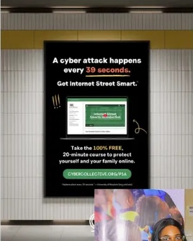
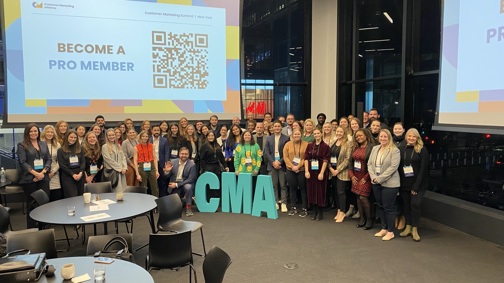
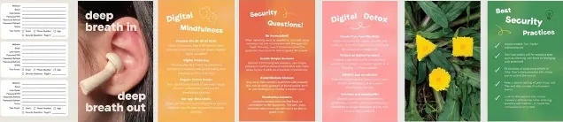
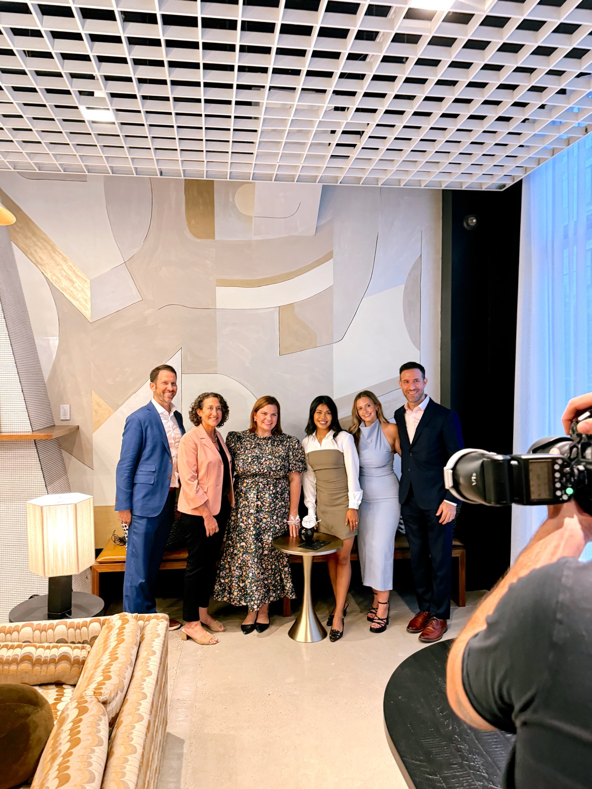
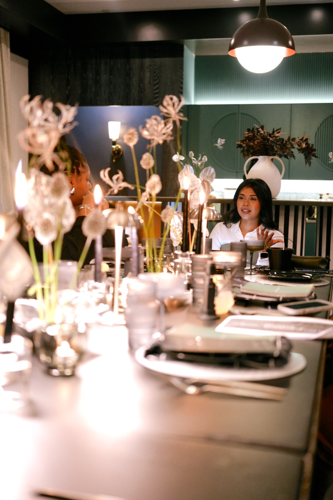
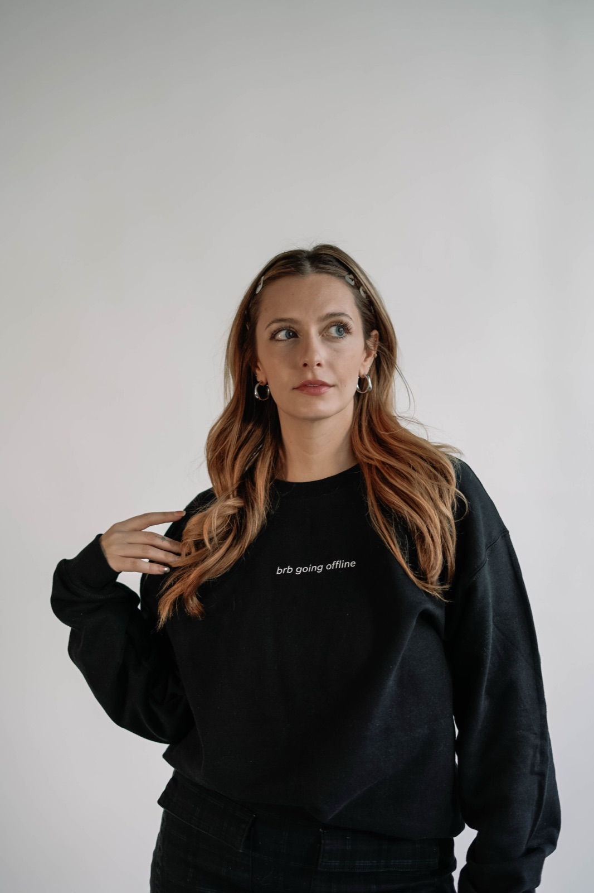
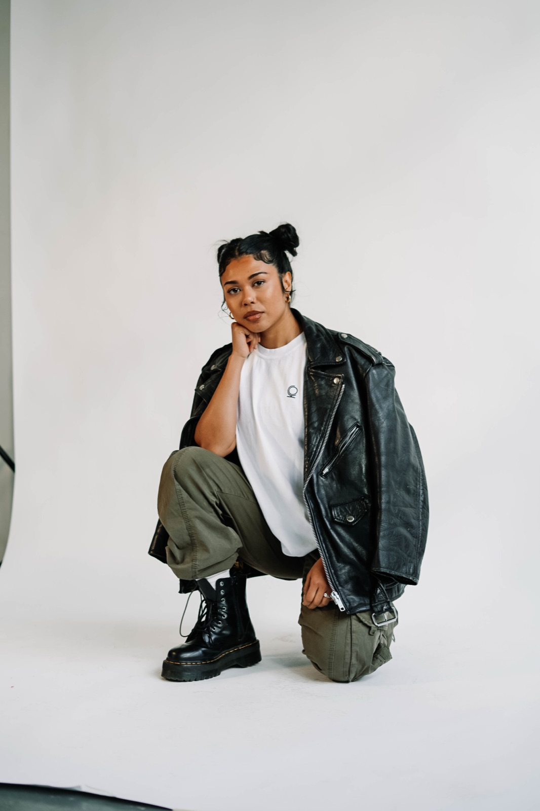
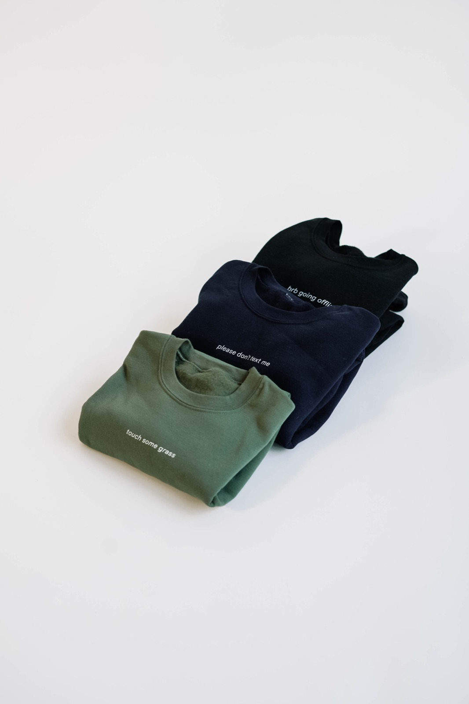

What I did
6 partsSocial & Community
Connected creator partners (Mozilla, Cisco, Filecoin Foundation, Stardust, AdoreMe), convenings, campaigns and merch into one story, with Internet Street Smarts at the center.
Voice
Directed three Cybersecurity Awareness Month campaigns and shaped the impact narratives used with funders and partners.
Creative Campaigns
Created a password journal with digital safety tips to bring teachings IRL. Hosted convenings with creator, impact, and brand partners on topics such as misinformation, and Web3 privacy.
Insights
Co-designed signature program with 100 global advocates; built in pre/post surveys and listening sessions with 500+ participants.
Impact
Turned program data into evidence that secured $600K+ from Omidyar, Hewlett and the Archewell Foundation; built revenue from events, merch and programs.
Team
Led a team of three across comms, social, grants and community. Board member since 2022.
The work
14 images













Partners + backers
- Partners
- Mozilla · Cisco · Filecoin Foundation · Stardust · AdoreMe · Unfinished · NYC Open Data
- Backed by
- Omidyar Network · Hewlett Foundation · Archewell Foundation